Database-数据库设计
-
Requirement analysis What data, applications, and operations needed
-
Conceptual database design
A high-level description of data, constraints using E - R model or a similar high level data model
-
Logical database design
Convert the conceptual design into a DB schema Relation Schema
-
Schema refinement
Normalization of relations: Check relational schema for redundancies and related anomalies.
-
Physical database design:
Indexing, clustering and database tuning
-
Create/initialize the database & Security design
Load initial data, testing. Identify different user groups and their roles
一、Conceptual database design & E-R model
概念
Entity：实体是客观存在的对象并且与其他对象可区分，实体具有属性。
Entity set：实体集是相同类型的实体的集合，他们具有相同的性质。
Relationship：联系是指多个实体之间的相互关联，联系也可以有属性。
Relationship set：联系集是相同类型联系的集合。一个联系集包含多个同类联系（或联系实例，relationship instance），一个联系集表示二个或多个实体集之间的关联。用数学的语言描述联系集就是$R\in {(e_1,e_2,...e_n)|e_1 \in E_1,e_2 \in E_2,...e_n\in E_n}$，具体的$(e_1,e_2,...e_n)$就是relationship。
Attribute 属性
- 每一个属性都有可取值的集合，称为domain。
- 简单属性和复合属性。比如名字可以包括姓+名两个属性，就称为复合属性。如果有些时候我们单独的需要提取人的姓，那么把属性拆分成复合属性是一个好的选择。
- 单值属性和多值属性。一个人的身份证号只有一个，但是一个人可以拥有很多电话号码，所以身份证号是单值属性，电话号码是多值属性。
- 派生属性，比如，生日派生出年龄。
- relationship也可以有属性
我们说entity set$E_1,E_2$参与relationship set$R$。
举一个例子。这里有$E_1=instructor, E_2=student$，他们参与了关系$R=takes$。关系R是联系集，也可以有属性，比如下面的date。只有两个实体的关系（或者说**$degree=2$**）的relationship我们称之为binary relationship，这也是大多数的情况。
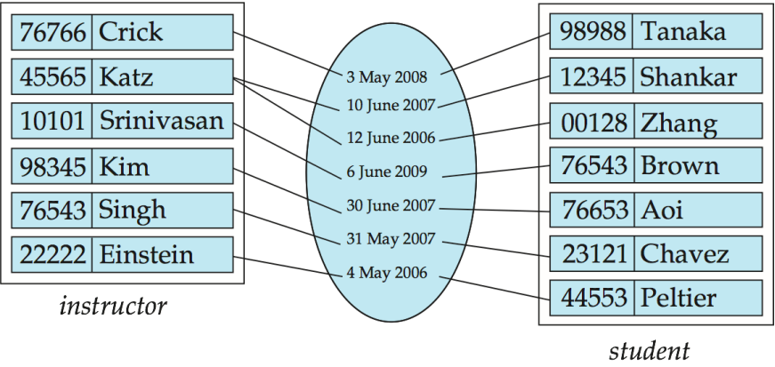
约束
ER图是可以反应约束条件的，比如主码，外码等。
mapping cardinality映射基数，表示一个entity通过一个relationship能关联的entity的数量。对于一个binary relationship，有下面几种情况：
- 1-1：可以通过任意一个entity来作为relationship set的primary key。
- 1-N(N-1)：可以选择N作为relationship set的primary key。
- N-N：需要用tuple作为relationship set的primary key。
对于entity set的primary key，我们要求他的attribute一定要可以唯一的表示每一个entity。
参与约束：如果entity set $E$ 中的每一个entity都参与到了relationship set $R$ 中，那么我们称 $E$ 在 $R$ 中是total。如果只有部分那么称为partial。
构建E-R图
E-R是一个非常好的对现实世界建模的方式，可以很好的应对很多不同的现实情况。
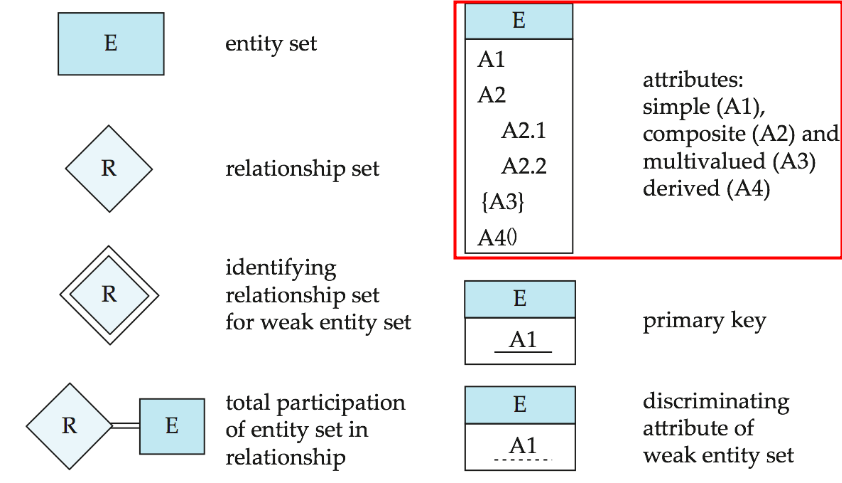
关系集
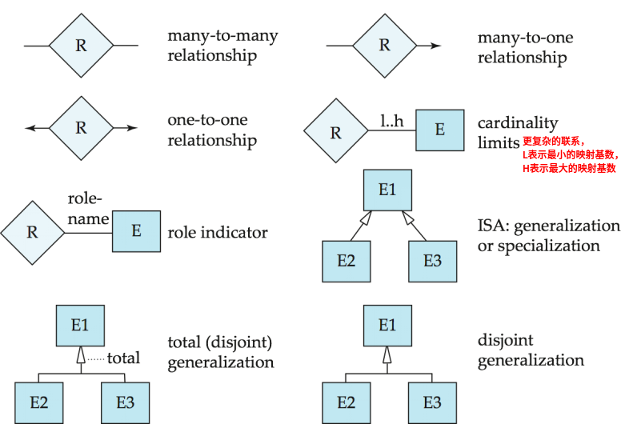
ER图也可以很好的表示非二元关系。
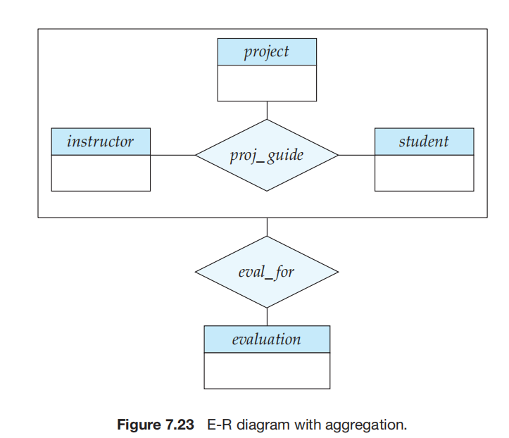
这是带了描述性属性的relationship advisor, data表示instructor和students匹配的时间。
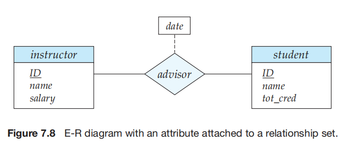
被relationship set连接的两个两个entity set不一定是要不一样的，如果是一样的话，我们可能需要表明他们在关系中扮演的角色role。比如下面这个例子，course和course之间的联系，一个课程是另一个课程的预修要求。
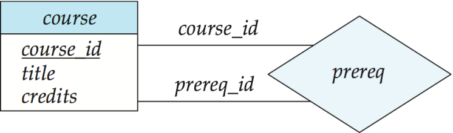
弱实体集是指没有primary key的entity set。比如这个开课情况关系，要唯一确定section本来应该需要{course_id,sec_id,semester,year}，但是如果section中包含course_id那么就出现了冗余。一个办法是删除sec_course，把section和course的关系隐含到一个属性中，但这不是我们需要的。
所以我们选择删除section中的course_id属性，但是这样section就没有足够的属性标识一个指定的section了（没有primary key了）为此我们将sec_course视为一个特殊的联系，他为唯一表示section实体提供额外信息，即course_id。
那么相应的有primary key的entity set就是强实体集。他们之间的relationship set就叫做identifying relationship，是多对一的，并且weak entity set的参与是全部的。identifying relationship不应该有描述性属性，因为都可以放在弱实体集中。
弱实体集没有主码，但是我们仍然要区分依赖于特定强实体集中某entity的弱实体集中的entity。这就通过分辨符discriminator(比如下面的sec_id,semester,year)。
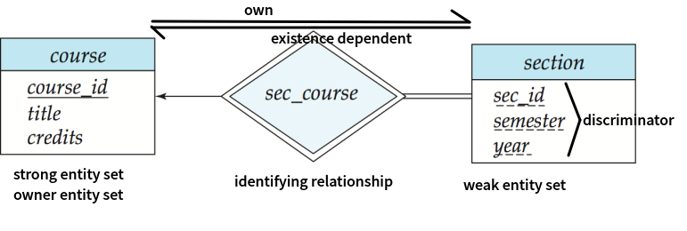
从ER图到逻辑表
-
对于一般的强 Entity Set ，我们可以对他直接创建一张表。
- 简单属性没什么好说的；对于复合的属性，把他每一个子属性都作为属性放进去。
- 对于多值型的属性，需要为它再建立一张表。他的primary key由属性的所有者和属性共同完成，并且把属性的所有者作为forgien key。
- 对于派生属性，我们并不在直接表中反映出来。
-
对于relationship，要把双方的primary key和自己的属性都带过来。
- 不过对于relationship自己的primary key，取决于是1-1/1-N/N-N。如果是N-N的话我们需要tuple作为primary key，1-N取N就可以了，1-1任取一个。如果不是Binary relationship，
-
对于弱 Entity set，因为仅仅依靠自己的属性无法确定primary key，所以还需要包括他所依赖的强 Entity set的属性（往往是primary key），并将他作为foreign key。
- 我们往往还需要做级联删除的约束。
按照上面的模式创建的表会存在冗余，我们可以合并冗余：
-
弱实体集需要包含强实体集的primary key，所以他们之间的relationship这张表就没有存在的意义。
-
1-N可以merge。考虑这样一个例子，学生$E_1=student$，学院$E_2=department$。$E_1$对$E_2$是一个多对一的关系，并且在这个关系中$E_1$是total的。那么我们可以把department作为$E_1=student$的一个属性，同时作为foreign key。 即使$E_1$是partial的，我们仍然可以通过NULL来完成。
-
1-1就更可以merge了。而且可以把relationship合并到任意一个entity set中。
进阶ER图
specialize & generalize
感觉有点像基类和子类的关系。比如person可能可以specialize为student和employ，students可能有GPA等属性，employ可能有salary属性，这是基类没有的。这就是specialize的过程，反过来看，就是generalize的过程。主要的目的，就是属性继承。
- total generalization/specialization: 每个高层entity必须属于一个底层entity set. (比如人分成男女)
- partial generalization/specialization: 某些高层entity可以不属于任何一个低层entity set (比如职业统计，但是可能有人无业？)
- disjoint: 每个entity最多属于一个低层entity set
- overlapping: 一个entity可以属于多个entity set
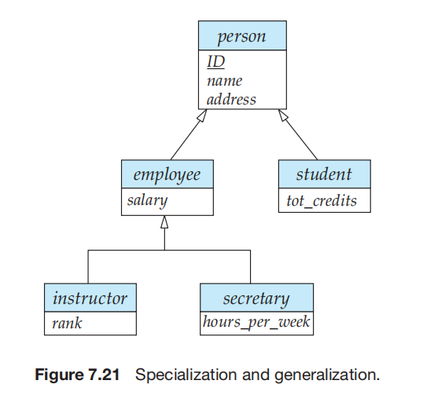
aggregate
因为ER图不能表达关系之间的关系。设想下面这个场景，本来我们有一个三元关系 instructor指导student完成project，然后我们现在要对他进行评价。那么我们就需要把这个三元关系aggregate，然后和evaluation建立联系。
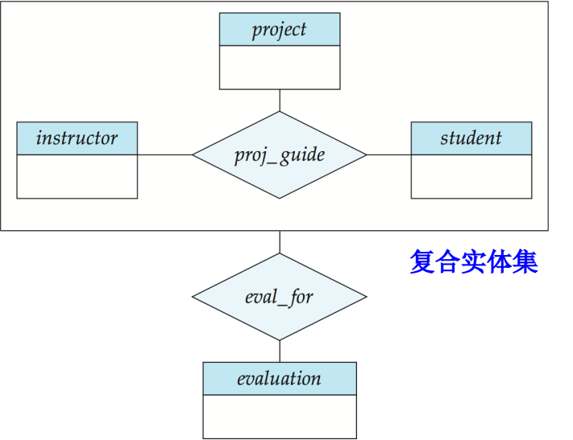
总结
一个大学数据库的例子：
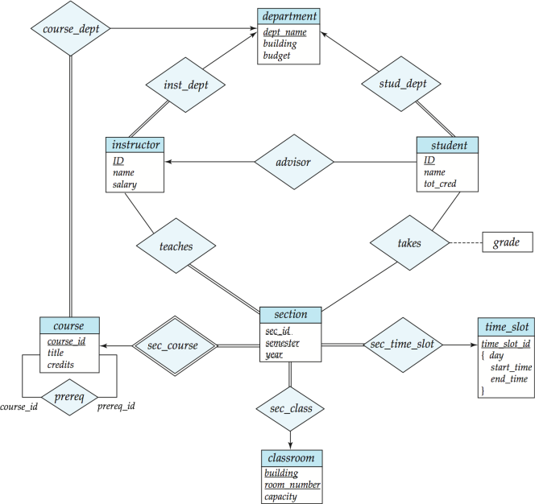
二、范式
我们要合理的数据数据库，要避免下面的一些陷阱pitfalls
- Redundant storage。数据冗余
- insert/delete/update anomalies。插入/删除/修改异常。
第一范式 1NF
第一范式，要求所有的属性的域是原子的。也就是说域的元素是不可分的单元。
比如一个人的名字，包含姓和名，我们认为这不是原子的。比如一个数字123，如果我们把他看成一个数字他就是原子的，如果我们把它看成一个字符序列，那么他就不是原子的。有时候使用组合值可以得到更好的效果，第一范式并不一定是最好的。
对于组合属性：让每个子属性本身成为成为一个属性 对于多值属性：为多值集合中的每个项创建一条元组
第三范式 3NF
我们首先要理解函数依赖。属性的集合用希腊字母如$\alpha$表示，R表示一个关系模式。t表示元组。
函数依赖
函数依赖：$\alpha$和$\beta$指的是属性集。 $f=\alpha \rightarrow \beta$的意思是$t_1[\alpha] = t_2[\alpha] \Rightarrow t_1[\beta]=t_2[\beta]$。我们说$\alpha$决定$\beta$。是不是感觉和之前的key非常相似。如果R上的所有的元组t满足f，我们说f在R上hold。
有下面几条公理（前三）和定理（后三）
自反率 $\beta \subseteq \alpha \Rightarrow \alpha \rightarrow \beta$
增补率 $\alpha \rightarrow \beta \Rightarrow \gamma \alpha \rightarrow \gamma \beta$
传递率 $\alpha \rightarrow \beta ,\beta\rightarrow \gamma \Rightarrow \alpha \rightarrow \gamma$
闭包
由此，我们可以给出一个函数依赖集$F$的closure $F^+$。$F^+$是$F$ **能推导出的(或者说逻辑蕴含)**所有函数依赖$f$的集合。这是求closure的算法1：所以我们判断一个$\alpha$是否是关系R的superkey，就可以判断$\alpha$能不能唯一确定一个tuple，也即是$\alpha^+ \rightarrow R$。
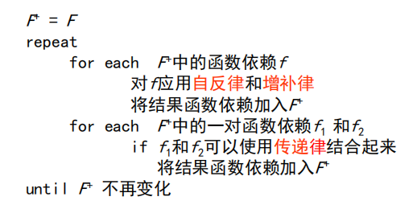
计算属性集合的closure，就是看属性集里面的元素还能推导出什么然后不断的加入就可以了。
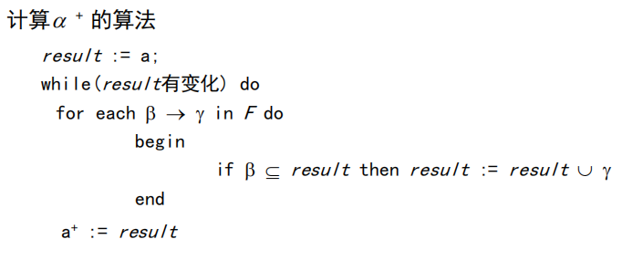
正则覆盖
直观地说，F的正则覆盖（记做$F_c$ ）是指与F等价的“极小的”函数依赖集合
如何计算Fc ：删除多余属性，存在以下三种情况
-
函数依赖集中存在可由其他函数依赖推导出的函数依赖$F = {A\rightarrow C, A\rightarrow B, B \rightarrow C } \Rightarrow F_c = {A\rightarrow B, B \rightarrow C }$
-
函数依赖左边部分存在属性冗余。比如在这个例子中，A可以推导出C
$F = {A\rightarrow B, B\rightarrow C, AC \rightarrow D } \Rightarrow F_c = {A\rightarrow B, B \rightarrow C,A \rightarrow D }$
-
函数依赖右边部分存在属性冗余
$F = {A\rightarrow B, B\rightarrow C, A \rightarrow CD } \Rightarrow F_c = {A\rightarrow B, B \rightarrow C,A \rightarrow D }$
无关属性，分别对应上面提到的后面两个
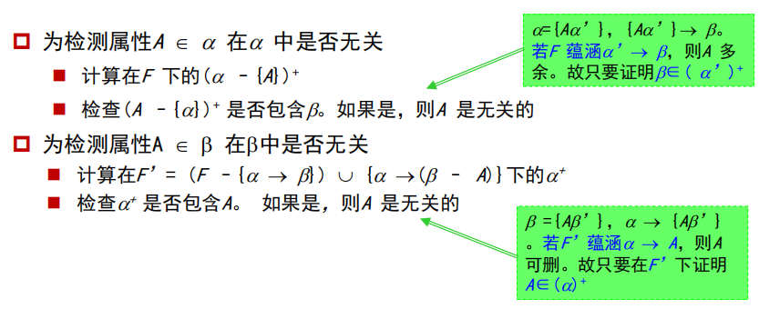
计算F的正则覆盖：
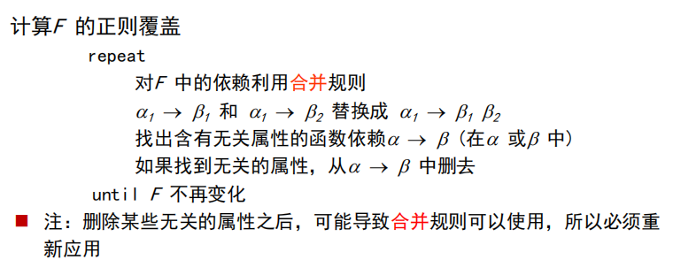
无损分解、保持依赖、Boyce-Codd范式
-
$R_1,R_2$是关系r的分解，如果满足${\textstyle \prod_{R_1} (r)} \bowtie {\textstyle \prod_{R_2} (r)} =r$，那么我们说$R_1,R_2$是r的无损分解lossless decomposition。BCNF和3NF都要满足这个条件。
判断是否是无损分解，可以将
-
保持依赖：$(F_1\cup F_2 \cup F_3...\cup F_4)^+ = F^+$
如果直接计算$F^+$，计算量很大。求解办法，对$F$的每一个函数依赖$\alpha \rightarrow \beta$进行下面的过程：如果result包含$\beta$的话，说明该依赖被保持。如果所有的都满足，那么该分解保持依赖
其实，这个是在研究属性集合$\alpha$的闭包。
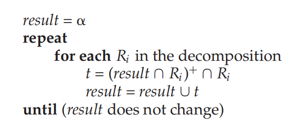
-
关系R具有函数依赖集合F，R属于BCNF当且仅当对 $F^+$中所有的函数依赖$\alpha \rightarrow \beta$，下面至少有一项成立：
- $\alpha \rightarrow \beta$ 是平凡的函数依赖，也就是说 $\beta \subseteq \alpha$。
- $\alpha$是R的superkey。
为检查具有函数依赖集合$F$的关系模式$R$是否属于BCNF，只需检查$F$中的函数依赖是否违反BCNF即可，而不需检查$F^+$中的所有函数依赖。可在$F$下判别R 是否违反BCNF，但须在$F ^+$下判别R的分解式是否违反BCNF。BCNF分解算法：
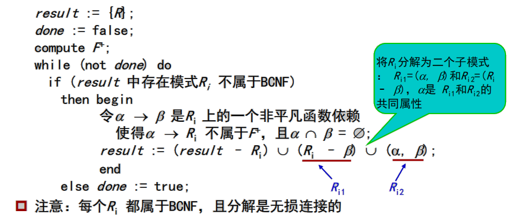
BCNF分解不总是保持依赖的。所以我们提出了3NF。
第三范式
关系R具有函数依赖集合F，R属于3NF当且仅当对 $F^+$中所有的函数依赖$\alpha \rightarrow \beta$，下面至少有一项成立：
- $\alpha \rightarrow \beta$ 是平凡的函数依赖，也就是说 $\beta \subseteq \alpha$。
- $\alpha$是R的superkey。
- $\beta - \alpha$的每个属性A都包含于R的一个candidate key中。（回顾，candidate key是最小的superkey，去掉任何一个属性就不是superkey了）
很明显的看出3NF比BCNF要弱一点，因此存在一定的信息冗余。其实上面说的三条是我们分解的目标，但是因为不能保证同时达成依赖保持和BCNF，所以我们提出了3NF。
3NF的分解方法：
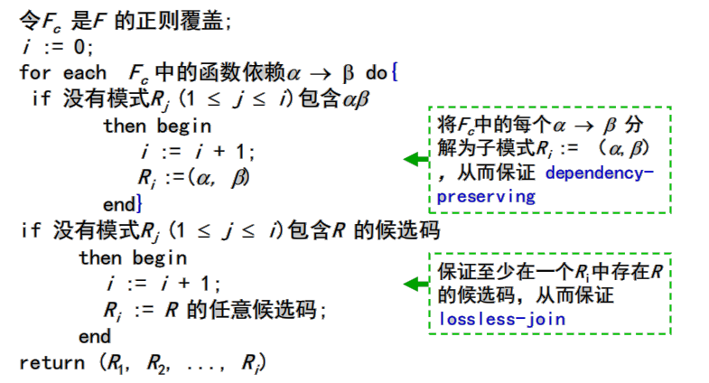
检测3NF
- 对于每一个$\alpha \rightarrow \beta$检测$\alpha$是否是superkey，如果否
- 检查$\beta$中的每个属性是否包含在R 的某个candidate key中
- 所以我们对于给定的R，我们要找出所有的candidate key。这是一个NP-hard的问题。
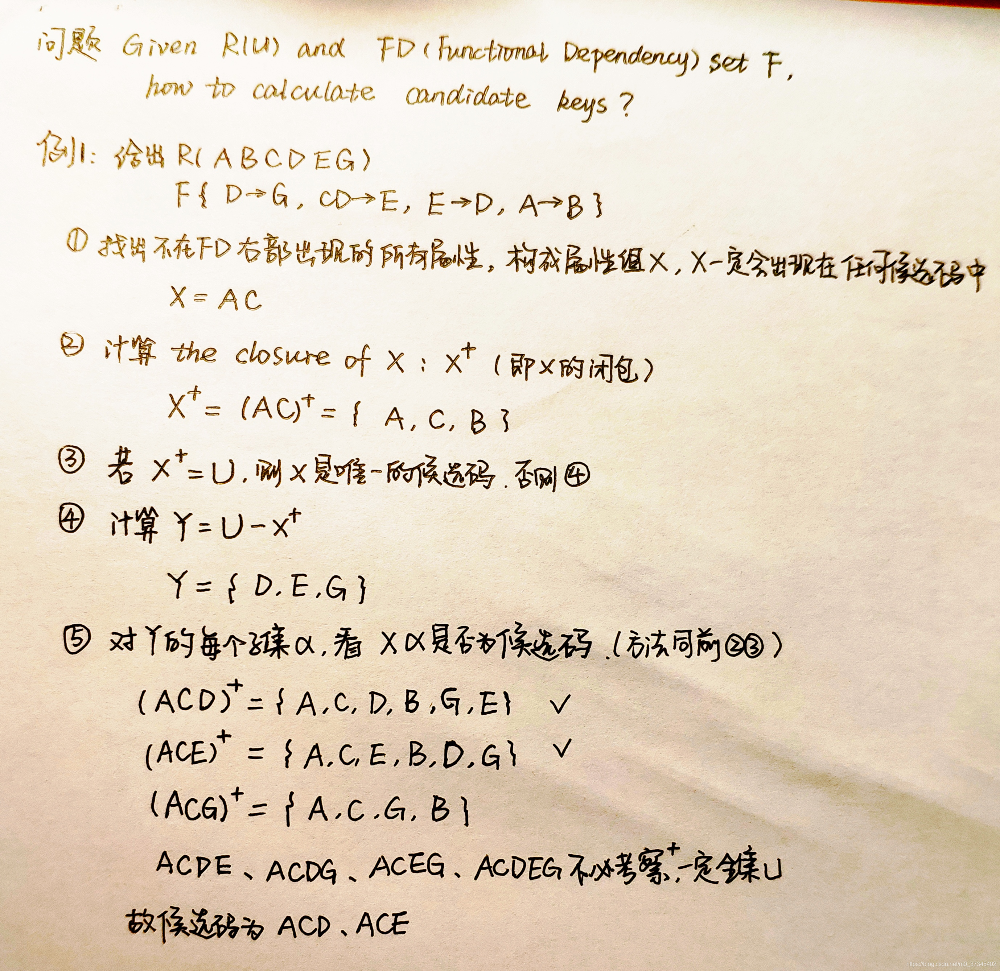
第四范式 4NF
多值依赖 Multivalue Dependencies
比如，一门课程确定了，那么上这门课的**老师们(是一个集合)**就确定了。
第四范式
分解方法：
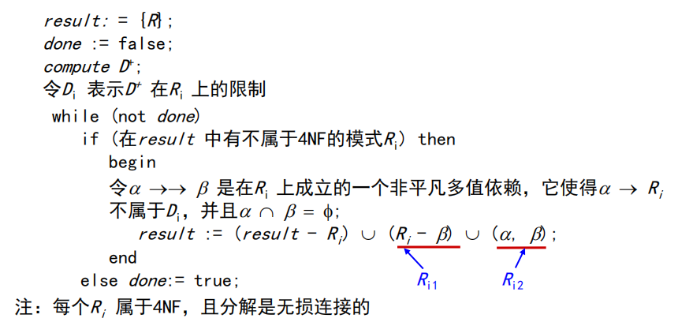
总结
设计方法一：
- 把所有的属性先放到一张表中，称为universal relation。
- 然后用各种范式把冗余去除
设计方法二：
- 用ER图。一般我们通过ER图就能得到较好的结果。
去除冗余可以节约空间，但是我们不总是要把冗余都去除。而且，也不是所有满足范式的设计都是好的。